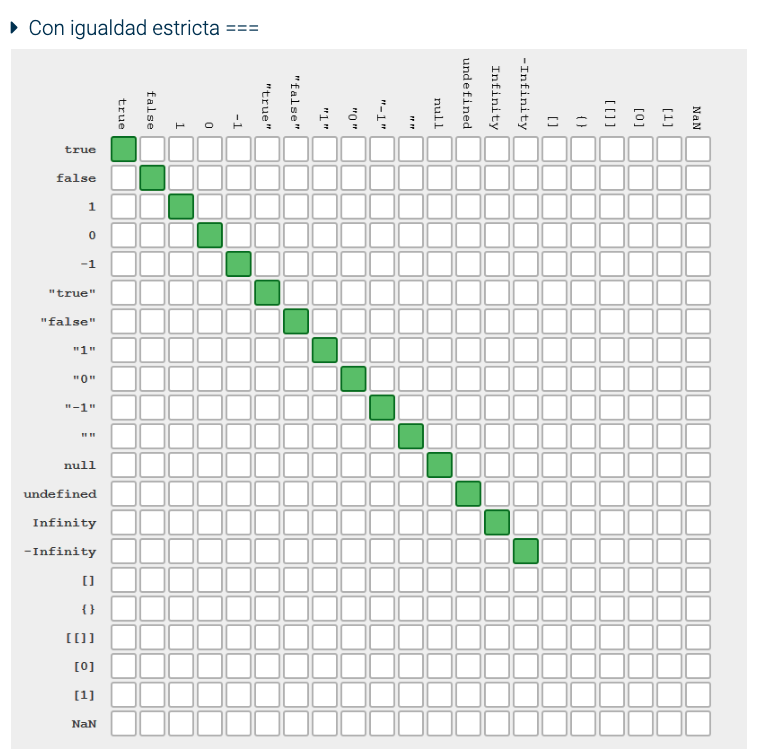
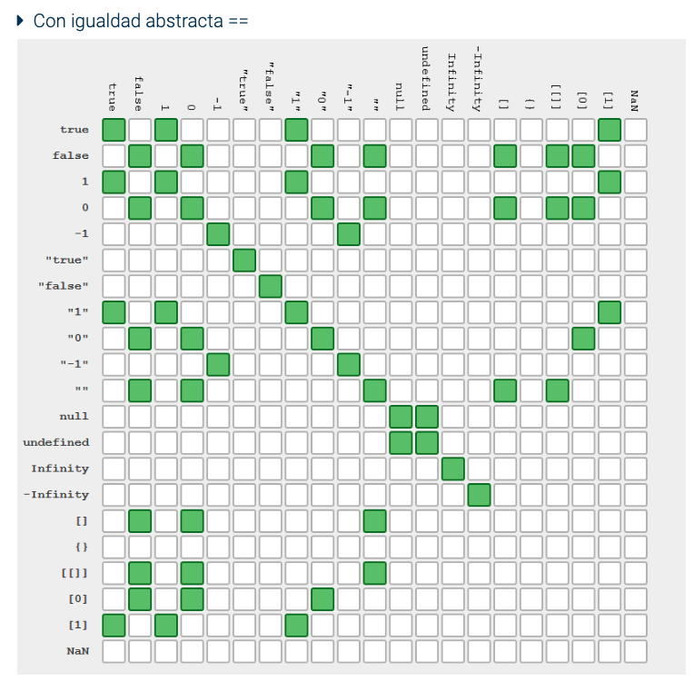
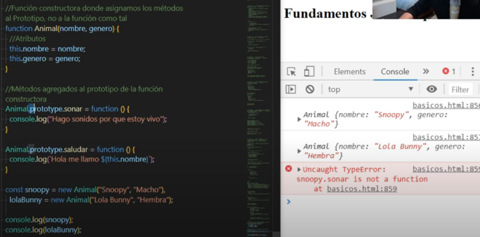
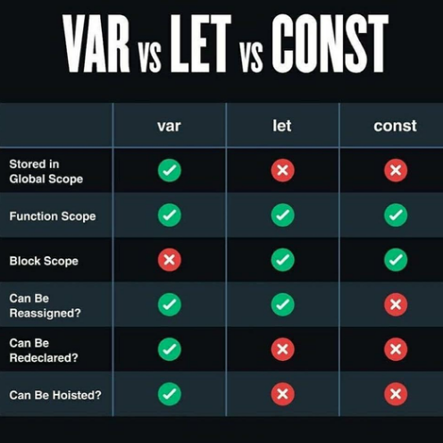
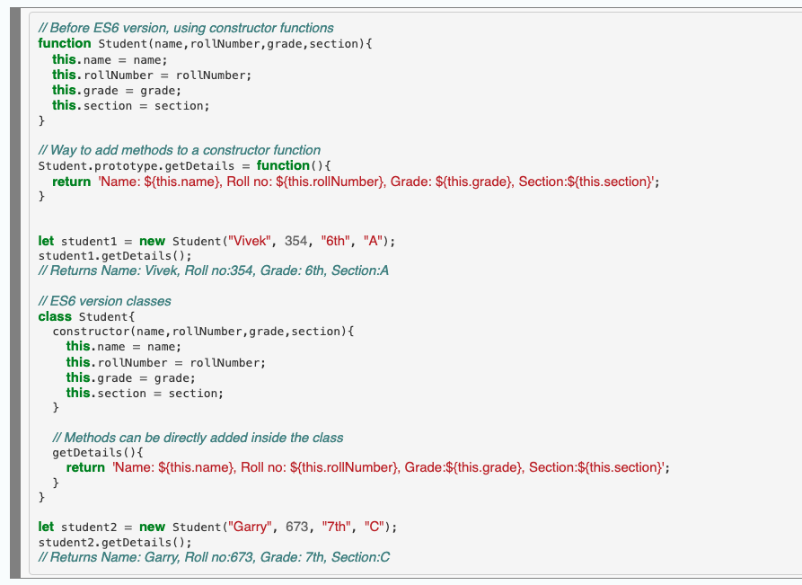
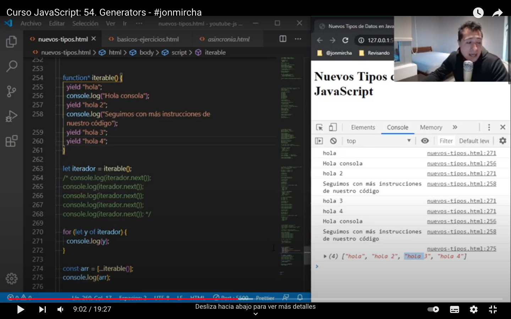

1.- What are the different data types present in javascript?
string, number boolean undefined null
* BigInt - This data type is used to store numbers which are above
the limitation of the Number data type.
It can store large integers and is represented by adding “n” to an integer literal.
Collection of data like objects and arrays
* Symbol - It is a new data type introduced in
the ES6 version of javascript. It is used to store an anonymous and unique value. (primitive)
para crear propiedades privadas en los objetos
(pones la propiedad entre corchetes [] ( const PROPIEDAD = Symbol('description') ) )
Examples:
function crearObjeto(){
const NAME = Symbol()
let obj = {
[NAME]:"jon",
eage:33
}
let id = Symbol('identificador')
obj[id]=0
return{
setId(val){
obj[id]=val
},
getId(){
return obj[id] // acceder a las propiedades con Symbol
},
get(){
return obj
}
}
}
let x = crearObjeto()
let objeto = x.get()
console.log('objeto:', objeto)
x.setId(33)
let t = x.getId()
console.log(t)
console:
objeto: {age: 33, Symbol(): 'jon', Symbol(identificador): 0}
33
const NOMBRE = Symbol('nombre');
const SALUDAR = Symbol('saludarFunction');
let persona = {
[NOMBRE]:'raulito',
edad: 33,
color:'rojo'
}
persona[SALUDAR]= function(){
console.log('hola tontos')
}
persona[SALUDAR]() // acceder a las funciones
for(let propiedad in persona){
console.log('key: ', propiedad)
console.log('value: ', persona[propiedad])
}
Object.getOwnPropertySymbols(persona)
console:
hola tontos
key: edad
value: 33
key: color
value: rojo
(2) [Symbol(nombre), Symbol(saludarFunction)]
2.- Explain Hoisting in javascript.
Hoisting is a default behaviour of javascript where
all the variable and function declarations are moved on top.
The scope can be both local and global.
Variable initializations are not hoisted, only variable declarations are hoisted
To avoid hoisting,
you can run javascript in strict mode by using “use strict” on top of the code
3.- Difference between “==” and “===” operators.
Both are comparison operators.
“ == ” is used to compare values whereas,
“ === “ is used to compare both value and types.


4.- Explain Implicit Type Coercion in javascript.
--type coershn--
Implicit type coercion in javascript is
automatic conversion of value from one data type to another.
It takes place when the operands of an expression are of different data types.
All values except 0, -0, “”, null, undefined and NaN are truthy values.
5.- Is javascript a statically typed or a dynamically typed language?
JavaScript is a dynamically typed language
6.- What is NaN property in JavaScript?
NaN property represents “Not-a-Number” value.
It indicates a value which is not a legal number.
7.- Explain passed by value and passed by reference
In JavaScript, primitive data types are passed by value
and non-primitive (objects and arrays) data types are passed by reference.
primitive data types any of this is independent and no problem the reassign values
but with arrays or Objects is different if you use 2 different variable names
to create reference for the same OBJ, in the 2 different variables have the same reference
and any change affect in the 2 variables
dealing
8.- What is an Immediately Invoked Function in JavaScript?
An Immediately Invoked Function ( known as IIFE and pronounced as IIFY)
is a function that runs as soon as it is defined.
Syntax of IIFE
(function(){
// Do something;
})();
9.- Explain Higher Order Functions in javascript.
Functions that operate in other functions,
either by taking them as arguments or by returning them.
function higherOrder(fn) {
fn()
}
higherOrder(
function() {
console.log('Hello world')
}
)
function higherOrder2() {
return function() {
return "Do something";
}
}
var x = higherOrder2();
x() // Returns "Do something"
10. Explain “this” keyword.
The “this” keyword refers to the object that the function is a property of.
11.- Explain call(), apply() and, bind() methods.
call() method allows an object to use the method (function) of another object.
call() accepts arguments
call() method takes arguments separately whereas,
apply() method takes arguments as an array.
bind()
This method returns a new function,
where the value of “this” keyword will be bound to the owner object,
which is provided as a parameter.
12.- What is currying in JavaScript?
Currying is an advanced technique to transform a function of arguments n,
to n functions of one or less arguments.
function curry(f) {
return function(a) {
return function(b) {
return f(a, b);
};
};
} // curry(f) does the currying transform
// usage
function sum(a, b) {
return a + b;
}
let curriedSum = curry(sum);
alert( curriedSum(1)(2) ); // 3
13.- Explain Scope and Scope Chain in javascript.
Scope in JS, determines the accessibility of variables and functions at various parts in one`s code.
There are three types of scopes in JS:
* Global Scope
* Local or Function Scope
* Block Scope {}
Scope Chain
if the javascript engine does not find the variable in local scope,
it tries to check for the variable in the outer scope.
If the variable does not exist in the outer scope,
it tries to find the variable in the global scope.
14.- Explain Closures in JavaScript.
Closures is an ability of a function to remember the variables
and functions that are declared in its outer scope.
function randomFunc(){
var obj1 = {name:"Vivian", age:45};
return function(){
console.log(obj1.name + " is "+ "awesome");
} //Has access to obj1 even when the randomFunc function is executed
}
var initialiseClosure = randomFunc(); // Returns a function
initialiseClosure();
saves the value in the memory for further reference.
This is the reason why the returning function is able to use the variable declared
in the outer scope even after the function is already executed.
This ability of a function to store a variable for further reference
even after it is executed, is called Closure.
15.- What are object prototypes?
All javascript objects inherit properties from a prototype.
For example,
Date objects inherit properties from the Date prototype
Math objects inherit properties from the Math prototype
Array objects inherit properties from the Array prototype.
On top of the chain is Object.prototype.
Every prototype inherits properties and methods from the Object.prototype.
A prototype is a blueprint of an object.
Prototype allows us to use properties and methods on an object
even if the properties and methods do not exist on the current object.

16.- What are callbacks?
A callback is a function that will be executed after another function gets executed.
Functions that are used as an argument to another function are called callback functions.
Therefore, callback is a function that will be executed after another function gets executed.
17.- What is memoization?
when you have a function of high cost, we must save the result in cache memory
so that when it is executed with the same parameters instead of executing it again
it only returns the value saved in cache
18.- What is recursion in a programming language?
Recursion is a technique to iterate over an operation
by having a function call itself repeatedly until it arrives at a result.
function add(number) {
if (number <= 0) {
return 0;
} else {
return number + add(number - 1);
}
}
add(3) => 3 + add(2)
3 + 2 + add(1)
3 + 2 + 1 + add(0)
3 + 2 + 1 + 0 = 6
19.- What is the use of a constructor function in javascript?
Constructor functions are used to create objects in javascript.
When do we use constructor functions?
If we want to create multiple objects having similar properties and methods
**Note- Name of a constructor function should always be written
in Pascal Notation every word should start with a capital letter.
Constructor functions allow us to group similar objects.
20.- What is DOM?
Document Object Model.
DOM is a programming interface for HTML and XML documents.
When the browser tries to render a HTML document,
it creates an object based on the HTML document called DOM.
21.- What are arrow functions?
They provide us with a new and shorter syntax for declaring functions.
Arrow functions can only be used as a function expression.
Each function in JavaScript defines its own (this value) context
but arrow functions capture the (this value) of the nearest enclosing context.
and don't use arrow functions in objects literals
22.- Differences between declaring variables using var, let and const
the scoping
let and const are block scope
var is function scope (global scope)

TEMPORAL DEAD ZONE
area of the code where we still cannot access certain variables (let or const)
23.- What is the rest parameter and spread operator?
**Note- Rest parameter should always be used at the last parameter of a function
24.- What is the use of promises in javascript?
Promises are used to handle asynchronous operations in javascript.
Promise object has four states -
Pending - Initial state of promise.
This state represents that the promise has neither been fulfilled nor been rejected,
Fulfilled - This state represents that the promise has been fulfilled,
meaning the async operation is completed.
Rejected - T his state represents that the promise has been rejected for some reason,
meaning the async operation has failed.
Settled - This state represents that the promise has been either rejected or fulfilled.
resolve is a function that will be called, when the async operation has been successfully completed.
reject is a function that will be called, when the async operation fails or if some error occurs.
then() method is used to access the result when the promise is fulfilled.
catch() method is used to access the result/error when the promise is rejected.
25.- What are classes in javascript?

25.- What are generator functions?
